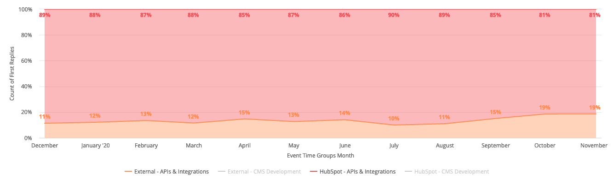
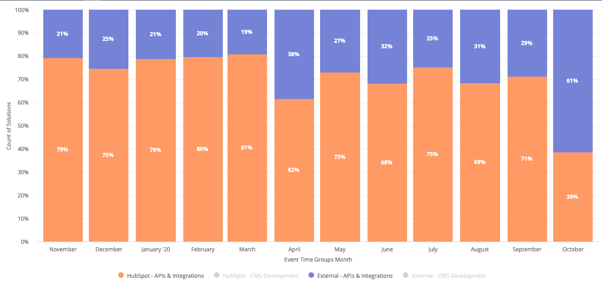
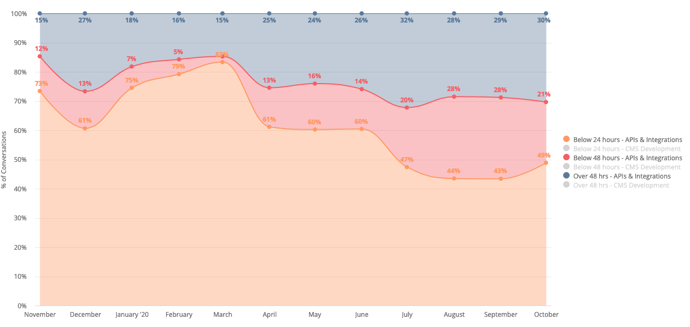

HubSpot Community
A brief guide to how we moderate
and how we measure our
success
How we moderate
You are a moderator, not a support specialist
- Ensure the question is clear and contains enough information to solve as if you do not have access to HubSpot's internal tools.
-
If available, provide links to other community content.
Make sure to attribute the author and the solution provider of the content - Tag in other community members who can help. Leverage the Champions
- When necessary, communicate with internal teams if there is a bug, UI confusion or documentation issue
- Update any post that has out of date information
What do we measure?
-
First reply engagement
We have no shortage of questions being asked in the Developer Community with an average of about 185 API questions/ month and 100 CMS questions/ month
What we want is for these questions to replied to first by the Community and not HubSpotters.
API First Reply Source
Since August, we have moved the average external response up 8%
What do we measure?
-
Solution Author
Next, we want to see that the solutions that the community is offering are useful and solving for the problem. We use this as part of method of finding our Community Champions.
API Solutions Author
We have a goal of 75% solutions to be authored by the community and not HubSpotters
What do we measure?
-
SLA
With the participation of the Community, we are able to more quickly address the questions.
API SLA
We have a goal of 90% of questions are responded to within 24 hours
